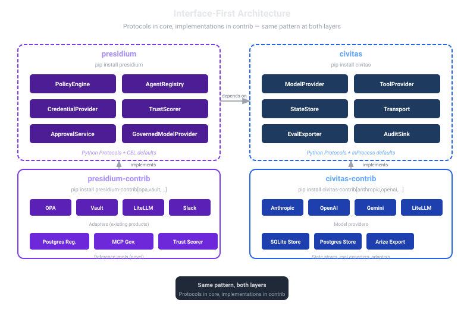
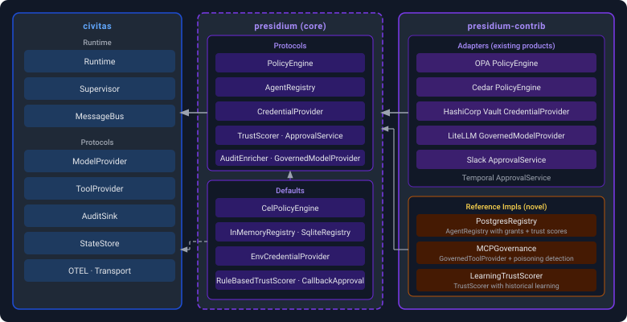
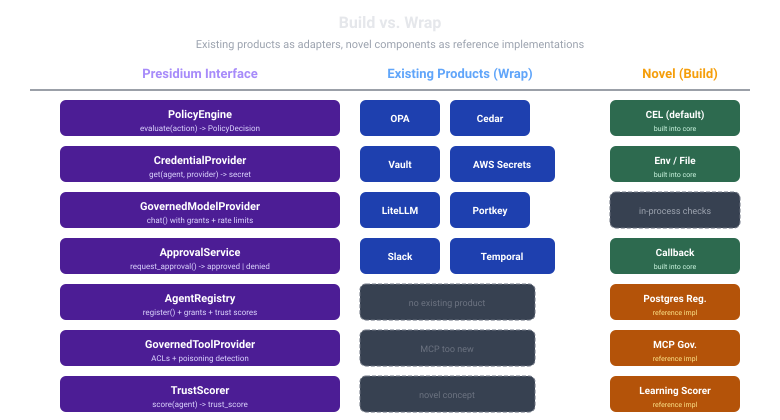

Package Map¶
What each package does, its boundaries, and dependencies. Last updated: 2026-07-07

Overview¶
Presidium ships as two packages. presidium is the interface library: pure Protocol definitions, no heavy dependencies, installable anywhere. presidium-contrib is the adapters and reference implementations: OPA, OpenBao, AgentGateway, LiteLLM, Slack, several stubbed gateway-backend adapters (Kong, Portkey, Cloudflare AI Gateway, Helicone, TrueFoundry), and reference implementations for components whose prior art (e.g. Microsoft AGT, Google Gemini) isn't available as a standalone, swappable library.
This follows the same pattern as Civitas (civitas + civitas-contrib): the core package defines the contracts, contrib provides the implementations.
presidium/ # Interface library (pip install presidium)
model.py # AgentRecord, Grant, PolicyRule, EvaluationStage, etc.
errors.py # PresidiumError hierarchy
approval.py # ApprovalService protocol + CallbackApprovalProvider
audit.py # AuditEnricher protocol (wraps Civitas AuditSink)
bus.py # GovernedMessageBus (PRE_MESSAGE enforcement)
credentials.py # CredentialProvider protocol + Env/File defaults
runtime.py # GovernedRuntime (from_config, reload_policies)
policy/
_base.py # PolicyEngine protocol
cel.py # CelPolicyEngine default (compile-once, fail-closed)
providers/
model.py # GovernedModelProvider (PRE_LLM / POST_LLM)
tool.py # GovernedToolProvider (PRE_TOOL / POST_TOOL)
gateway.py # LLMGatewayBackend + ToolsGatewayBackend protocols (2026-07-07:
# pluggable operations layer GovernedModelProvider/
# GovernedToolProvider delegate to — see llm-gateway.md,
# mcp-gateway.md)
registry/
_base.py # AgentRegistry protocol
memory.py # InMemoryRegistry (dict-backed, snapshot semantics)
sqlite.py # SqliteRegistry (WAL mode, asyncio.Lock)
scoring/ # Domain-agnostic scoring library
events.py # Event, EventContext
functions.py # score(), windowed_score(), decay(), replay()
config.py # ScoringConfig, DecayConfig, WindowConfig
spec.py # ScoringSpec (immutable, spec_hash)
trust/ # Trust scoring (consumer of scoring library)
core.py # TrustScorer protocol, LinearTrustScore, tier_for_value
protocols.py # ContextualTrustScorer, IntrospectableScorer, QueryableScorer
windowed.py # WindowedTrustScorer (cold-start, spec pinning, OTel)
cold_start.py # ColdStartStrategy + Optimistic/Neutral/Pessimistic
telemetry.py # Optional OTel instrumentation (no-op fallback)
presidium-contrib/ # Adapters + reference impls
opa/engine.py # OPA PolicyEngine adapter (REST API)
openbao/provider.py # OpenBao CredentialProvider (hvac, MPL 2.0)
agentgateway/client.py # AgentGateway adapter — LLMGatewayBackend (shipped) +
# ToolsGatewayBackend (list_tools/call_tool: gap, see issue)
litellm/client.py # LiteLLM Proxy adapter — LLMGatewayBackend. Leading 2nd-adapter
# candidate (2026-07-07 market research), NOT frozen.
kong/client.py # Kong AI Gateway adapter — LLMGatewayBackend. Stubbed.
portkey/client.py # Portkey adapter — LLMGatewayBackend. Stubbed.
cloudflare_ai_gateway/client.py # Cloudflare AI Gateway adapter — LLMGatewayBackend. Stubbed.
helicone/client.py # Helicone AI Gateway adapter — LLMGatewayBackend. Stubbed.
truefoundry/client.py # TrueFoundry AI Gateway adapter — LLMGatewayBackend. Stubbed.
slack/approval.py # Slack HITL adapter (Block Kit buttons)
webhook/approval.py # Webhook approval adapter (POST + callback)
registry/postgres.py # PostgresAgentRegistry (asyncpg)
mcp_gateway/ # MCP governance reference impl
poisoning.py # Tool poisoning detection (hash-based snapshots)
redaction.py # Credential redaction (regex patterns)
pii.py # PII detection + masking (configurable patterns)
trust/scorer.py # LearningTrustScorer (adjustable weights, journal)
service/ # Service mode GenServer wrappers
policy.py # PolicyEvaluatorServer (distributed evaluation)
registry.py # RegistryServer (distributed lookups)

Component Map¶

| Component | Interface (presidium) | Library Mode Default | Service Mode | Existing Products (Adapters) | Novel (Reference Impl) |
|---|---|---|---|---|---|
| Policy Engine | PolicyEngine |
CelPolicyEngine (in-process CEL) |
PolicyService GenServer |
OPA, Cedar | |
| Agent Registry | AgentRegistry |
InMemoryRegistry / SqliteRegistry |
RegistryService (Postgres) |
Postgres registry with grants + trust | |
| Credential Provider | CredentialProvider |
EnvCredentialProvider / FileCredentialProvider |
OpenBao (Vault-compatible), AWS Secrets Manager | ||
| Trust Scorer | TrustScorer |
LinearTrustScore / WindowedTrustScorer |
LearningTrustScorer |
Trust scoring with windowed aggregation, cold-start, spec pinning | |
| HITL / Approval | ApprovalService |
CallbackApprovalProvider |
Slack, Temporal, PagerDuty | ||
| Audit Enricher | AuditEnricher |
InProcessAuditEnricher |
Datadog, Splunk, ELK (via Civitas AuditSink) | ||
| LLM Gateway | GovernedModelProvider + LLMGatewayBackend |
In-process grant checks + rate limits | AgentGateway (reference, built); LiteLLM (leading 2nd candidate, not frozen); Kong, Portkey, Cloudflare, Helicone, TrueFoundry (stubbed) | ||
| MCP Governance | GovernedToolProvider + ToolsGatewayBackend |
In-process ACL checks | AgentGateway (sole backend today — MCP+A2A methods pending, see issue) | MCP governance (no standalone library to wrap) |
presidium (core)¶
Protocol definitions and lightweight defaults.
The core package has no heavy dependencies. Every component is a Protocol — structural typing, not inheritance. Defaults are in-process implementations suitable for development and small deployments.
Policy Engine¶
class PolicyDecision(Enum):
ALLOW = "allow"
DENY = "deny"
REQUIRE_APPROVAL = "require_approval"
class EvaluationStage(Enum):
PRE_TOOL = "pre_tool"
PRE_LLM = "pre_llm"
PRE_MESSAGE = "pre_message"
REGISTRATION = "registration"
POST_TOOL = "post_tool"
POST_LLM = "post_llm"
@dataclass
class PolicyResult:
decision: PolicyDecision
policy_name: str
reason: str | None = None
approvers: list[str] | None = None
enforcement: EnforcementMode = EnforcementMode.HARD
@dataclass
class EvaluationContext:
agent: AgentRecord # identity, grants, trust, status, owner
request: ActionRequest # resource + action + parameters
time: datetime
class PolicyEngine(Protocol):
def load_policies(self, rules: list[PolicyRule]) -> None: ...
async def evaluate(
self, stage: EvaluationStage, context: EvaluationContext
) -> PolicyResult: ...
class CelPolicyEngine:
"""Default: compiles CEL expressions at load time, evaluates in-process (1-3ms).
Fail-closed: evaluation errors return DENY. No sidecar required."""
def load_policies(self, rules: list[PolicyRule]) -> None: ...
async def evaluate(
self, stage: EvaluationStage, context: EvaluationContext
) -> PolicyResult: ...
See policy-engine design doc for full data model, enforcement modes, CEL expression format, and design decisions.
CEL (Common Expression Language) is the default because it's embeddable, has a Python implementation (cel-python), and is the direction Kubernetes is moving for admission policies. No sidecar, no network call, no Rego to learn.
Agent Registry¶
@dataclass
class Grant:
resources: list[str] # ["tool:database", "llm:claude-sonnet"]
actions: list[str] # ["read", "write", "invoke"]
scope: dict[str, str] = field(default_factory=dict)
condition: str | None = None # CEL expression evaluated at policy time
expires_at: datetime | None = None
@dataclass
class AgentRecord:
# Identity
agent_id: str # SPIFFE-compatible URI: presidium://{trust_domain}/{path}
name: str
public_key: str # Ed25519 public key (base64)
# Governance
grants: list[Grant] = field(default_factory=list)
trust_value: float = 0.5
trust_tier: TrustTier = TrustTier.STANDARD
status: AgentStatus = AgentStatus.REGISTERED
# Accountability
owner: str | None = None
parent_agent_id: str | None = None
revision: int = 0
class AgentRegistry(Protocol):
async def register(self, record: AgentRecord) -> AgentRecord: ...
async def lookup(self, name: str) -> AgentRecord | None: ...
async def lookup_by_id(self, agent_id: str) -> AgentRecord | None: ...
async def add_grant(self, name: str, grant: Grant) -> AgentRecord: ...
async def has_grant(self, name: str, resource: str, action: str) -> bool: ...
async def record_trust_event(self, name: str, event: TrustEvent) -> AgentRecord: ...
async def update_status(self, name: str, status: AgentStatus) -> AgentRecord: ...
See agent-registry design doc for full data model, SPIFFE identity format, dynamic spawning rules, and design decisions.
No standalone library packages agent grants and trust scores together for reuse — existing registries (e.g. Google Gemini) and trust models (e.g. Microsoft AGT) are coupled to their host platforms. This is the gap the reference implementation fills.
Credential Provider¶
class CredentialProvider(Protocol):
async def get(
self,
agent_id: str,
credential_name: str,
grants: list[Grant],
) -> str | None: ...
async def close(self) -> None: ...
class EnvCredentialProvider:
"""Default: reads from os.environ. Checks grants before resolving.
Credential resource format: credential:{name}"""
async def get(self, agent_id: str, credential_name: str, grants: list[Grant]) -> str | None: ...
class FileCredentialProvider:
"""Default: reads from a key=value file (dev only). Same grant checking."""
def __init__(self, path: Path) -> None: ...
async def get(self, agent_id: str, credential_name: str, grants: list[Grant]) -> str | None: ...
See credential-provider design doc for grant integration, topology YAML wiring, audit event format, and design decisions.
Trust Scorer¶
class TrustEvent(Enum):
SUCCESS = "success"
FAILURE = "failure"
POLICY_VIOLATION = "policy_violation"
HUMAN_OVERRIDE = "human_override"
class TrustScorer(Protocol):
@property
def value(self) -> float: ... # 0.0 - 1.0
@property
def tier(self) -> TrustTier: ...
@property
def last_updated(self) -> datetime: ...
def record_event(self, event: TrustEvent) -> None: ...
class LinearTrustScore:
"""Default: linear decay, 3 tiers (TRUSTED >= 0.7, STANDARD 0.3-0.7, RESTRICTED < 0.3).
SUCCESS +0.02, FAILURE -0.05, POLICY_VIOLATION -0.10, decay -0.01/hr."""
See agent-registry design doc for trust tier thresholds, decay model, and the AGT-style learning scorer in presidium-contrib.
Mature agent trust models exist (e.g. Microsoft AGT's 0–1000 scorer) but none ship as a reusable library. The reference implementation in presidium-contrib adds learning from historical patterns.
HITL / Approval Service¶
@dataclass
class ApprovalRequest:
request_id: str # UUID
agent_id: str # presidium:// URI
resource: str # e.g. "tool:database"
action: str # e.g. "write"
reason: str # from PolicyResult.reason
approvers: list[str] # from PolicyRule.approvers
context: dict[str, Any]
policy_name: str
status: ApprovalStatus = ApprovalStatus.PENDING
timeout_seconds: float = 1800.0
@dataclass
class ApprovalDecision:
request_id: str
approved: bool
decided_by: str
reason: str | None = None
class ApprovalService(Protocol):
async def request_approval(self, request: ApprovalRequest) -> ApprovalDecision: ...
async def list_pending(self) -> list[ApprovalRequest]: ...
async def decide(self, request_id: str, decision: ApprovalDecision) -> None: ...
class CallbackApprovalProvider:
"""Default: programmatic callback or auto-approve/deny flags. No infrastructure required."""
auto_approve: bool
auto_deny: bool
callback: Callable | None
async def request_approval(self, request: ApprovalRequest) -> ApprovalDecision: ...
See approval-service design doc for PEP integration, Slack/Temporal contrib adapters, and the connection to M4 autonomy progression.
Audit Enricher¶
# AuditEvent is Civitas's TypedDict — Presidium does not define its own
from civitas.audit.types import AuditEvent, AuditSink
class AuditEnricher(Protocol):
"""Structural subtype of AuditSink. Drop-in replacement that adds governance context."""
async def emit(self, event: AuditEvent) -> None: ...
async def flush(self) -> None: ...
async def close(self) -> None: ...
class InProcessAuditEnricher:
"""Default: looks up agent in registry, adds details['governance'] dict, forwards to sink.
Fail-open: enrichment errors forward the original event rather than dropping it."""
def __init__(self, downstream: AuditSink, registry: AgentRegistry, cache_ttl: float = 5.0) -> None: ...
async def emit(self, event: AuditEvent) -> None: ...
Enrichment adds a governance key to event["details"]:
# Before enrichment (Civitas event)
{"sender": "researcher", "recipient": "database_tool", "type": "tool_call"}
# After enrichment (Presidium adds governance key)
{"sender": "researcher", "recipient": "database_tool", "type": "tool_call",
"governance": {"agent_id": "presidium://acme.com/prod/researcher",
"trust_value": 0.72, "trust_tier": "trusted", "owner": "alice@acme.com"}}
See audit-enricher design doc for the full event type catalog, topology YAML wiring, and design decisions.
Presidium doesn't own the audit destination. It enriches events with governance context and forwards to Civitas's AuditSink, which already has adapters for Datadog, Splunk, and ELK.
LLM Gateway¶
class GovernedModelProvider:
"""A concrete class (not a Protocol) doing pure PRE_LLM/POST_LLM authorization -- it does
NOT implement civitas.ModelProvider itself (no chat()). presidium.providers.civitas_adapters.
GovernedModelProviderAdapter is the real, drop-in civitas.ModelProvider that composes this
check with a real backend."""
async def check(self, agent_name: str, model: str) -> Any: ... # raises PolicyDeniedError on DENY, else PolicyResult
async def post_check(self, agent_name: str, model: str, result_data: dict[str, Any]) -> Any: ...
class LLMGatewayBackend(Protocol):
"""Pluggable operations layer GovernedModelProvider delegates to after authorization passes.
AgentGateway is the reference/built adapter; see llm-gateway.md for the full candidate table
(LiteLLM is the current leading 2nd-adapter pick, not frozen)."""
async def chat(
self, messages: list[dict[str, str]], *, model: str | None = None,
agent_name: str | None = None, **kwargs: Any,
) -> dict[str, Any]: ...
async def list_models(self) -> list[dict[str, Any]]: ...
async def health(self) -> bool: ...
MCP Governance¶
class GovernedToolProvider:
"""A concrete class (not a Protocol) doing pure PRE_TOOL/POST_TOOL authorization for
possibly many tools -- it does NOT implement civitas.ToolProvider itself.
presidium.providers.civitas_adapters.GovernedToolAdapter is the real, drop-in
civitas.ToolProvider that wraps exactly one real backend tool with this check."""
async def check(self, agent_name: str, tool: str, action: str = "invoke",
parameters: dict[str, Any] | None = None) -> Any: ... # raises PolicyDeniedError on DENY, else PolicyResult
async def check_grant(self, agent_name: str, resource: str, action: str) -> Any: ...
class ToolsGatewayBackend(Protocol):
"""Pluggable operations layer GovernedToolProvider delegates to. call_tool() is deliberately
uniform for a classic MCP tool and an A2A-delegated agent (outbound only — see mcp-gateway.md
Non-Goals for deferred inbound A2A exposure). AgentGateway is the sole implementation today."""
async def list_tools(self, *, agent_name: str | None = None) -> list[dict[str, Any]]: ...
async def call_tool(
self, name: str, arguments: dict[str, Any], *, agent_name: str | None = None,
) -> dict[str, Any]: ...
async def health(self) -> bool: ...
Existing MCP gateways (incl. Microsoft AGT's MCP Security Gateway) aren't available as standalone libraries to wrap. The reference implementation in presidium-contrib adds tool poisoning detection and credential redaction.
presidium-contrib¶
Adapters for existing products and reference implementations for novel components.
Adapters (existing products)¶
These wrap products that already exist. The adapter implements the Presidium protocol; the underlying product does the work.
adapters/opa.py — OPA PolicyEngine adapter. Calls the OPA REST API. Use when you already run OPA and want to reuse your Rego policies.
adapters/cedar.py — Cedar PolicyEngine adapter. Use when you need Cedar's authorization model (entity-based, fine-grained).
adapters/openbao.py — OpenBao CredentialProvider. Reads secrets from OpenBao/Vault KV v2 engine via hvac. Handles token renewal. API-compatible with HashiCorp Vault — existing Vault deployments work unchanged. OpenBao is the MPL 2.0 community fork under Linux Foundation / OpenSSF Sandbox.
agentgateway/client.py — AgentGateway LLMGatewayBackend (shipped) + ToolsGatewayBackend
(MCP/A2A list_tools/call_tool methods pending — tracked as an issue). Routes LLM, MCP, and A2A
calls through AgentGateway (Linux Foundation). Native CEL policy engine, OpenTelemetry
observability.
litellm/client.py — LiteLLM Proxy LLMGatewayBackend. Current leading candidate for the
second fully-built backend (2026-07-07 market research: highest OSS adoption signal, MIT license,
Python-native, self-hostable) — not frozen, may change on customer/market signal. LiteLLM does
not do MCP/A2A, so it does not implement ToolsGatewayBackend.
kong/client.py, portkey/client.py, cloudflare_ai_gateway/client.py, helicone/client.py,
truefoundry/client.py — LLMGatewayBackend stubs (interface-conformant, NotImplementedError
bodies). Reserve the extras name and prove the Protocol isn't AgentGateway-shaped-in-disguise
without committing build effort to all of them.
adapters/slack_approval.py — Slack ApprovalService. Posts approval requests to a Slack channel with approve/deny buttons. Waits for response via Slack Events API.
adapters/temporal_approval.py — Temporal ApprovalService. Creates a Temporal human task workflow. Integrates with existing Temporal deployments.
Reference Implementations (novel)¶
These implement components where prior art (e.g. Microsoft AGT, Google Gemini) isn't available as a standalone library to wrap. They're production-ready but not wrappers.
reference/postgres_registry.py — AgentRegistry backed by Postgres. Stores agent records, grant sets, and trust score history. Supports the RegistryService GenServer for service mode.
reference/mcp_governance.py — GovernedToolProvider with full MCP governance: ACL enforcement, tool poisoning detection (hash-based), credential redaction from parameters, and per-call audit logging.
reference/trust_scorer.py — LearningTrustScorer. Starts with rule-based scoring, then learns from the decision journal (action, context, outcome, human decision) to improve signal weighting over time.